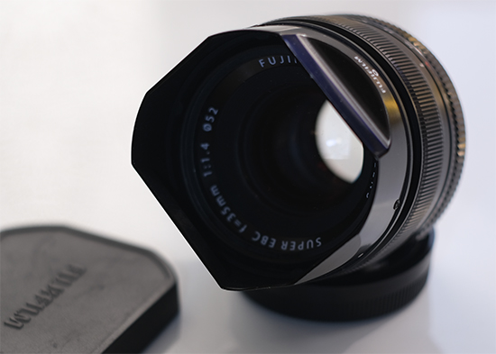

Да, это похоже на дневник, с моими впечатлениями и выводами. Решил попробовать себя в сфере веб. программирования, и это мой первый проект. Тему выбрал знакомую и интересную,- это фотография, мое хобби. На самом деле, у меня много всяких увлечений, но сегодня речь пойдет, только об одном. Ни в коей мере не претендую на истину, в первой инстанции. Но с другой стороны, это же дневник, поэтому могу писать здесь, что угодно ;). Начнем болтовню с не очень популярной системы "Fujifilm". По крайней мере не такой популярной, как "Canon", "Nikon" и "Sony". А современные молодые люди, порой даже не слышали о такой фирме. Признаюсь, выбор был эстетический. Понравился дизайн, тактильные ощущения, Под рукой кнопки управления. Характеристики стал смотреть уже позже. Еще одним фактором выбора было, что не "как у всех." Не обязательно уподобляться "Толпе." Меня всегда это возмущало, со школьной скамьи. И понятное дело, что фразы “А почему у тебя не Canon”, выводят из равновесия. Я ничего не имею против других Фирм, но когда ты выбираешь,- то ты Выбираешь, и смотришь под себя. Факторов много, которые влияют на твой выбор, и внешний вид и характеристики и гарантийное обслуживание, да и много еще другого. Есть конечно и такие, что им сказали, что надо Брать только это, и ничего другого. Но если за них сделали выбор, почему я за себя не могу сделать… В итоге мне снимать на эту технику, а не какому то знакомому дяде. Ладно, меня понесло… Вернемся к нашим “баранам”. Фирма "Fujifilm" не новичок, без малого 100 лет. Поэтому хочется добавить немного истории…
История компании.
История компании началась в 1934 году именно с производства фотопленки. Новая компания расположилась в городе Ашигара недалеко от горы Фудзи. Из-за своего близкого расположения к священной горе новая компания и получила название Fuji PhotoFilm Co. После 2-й мировой войны, появилась и цветная пленка — причем первая в Японии .В 1944-м компания приобрела завод по производству оптики Enomoto Kogaku Seiki Manufacturing Co., Ltd, намереваясь начать выпуск фото- и кинообъективов. Но все карты спутала война, в течение которых компания выпускала оборудование для военных нужд. После войны компания расширяет спектр выпускаемой продукции - появляются камеры и объективы, но основные мощности все равно были сосредоточены на производстве фотопленки разных форматов.
В 1960 году впервые на упаковке с пленкой появилась надпись - Fujifilm, которая и прижилась на продукции компании. В 1976 году FujiFilm первой в мире выпустила цветную негативную фотопленку с чувствительностью 400 ISO. В то время чувствительность цветных пленок была в диапазоне 25-50 ISO, и значение в 400 было невероятным прорывом. Чуть позже был налажен выпуск цветных позитивных пленок Fujichrome, которые стали практически стандартом в пейзажной фотографии.
После войны в компании FujiFilm снова проявили дальновидность и воспользовавшись тем, что практически вся немецкая промышленность встала, наладили выпуск объективов Fujinon для форматных камер - усовершенствовав лучшие образцы немецкой техники . В 1948 году компания выпустила свою первую фотокамеру — среднеформатную «раскладушку» с выдвижным мехом и форматом кадра 6 x 6. Аппарат получил название Fujica Six IA. Название было образовано из сокращенного словосочетания Fuji Camera. Несмотря на выпуск довольно обширной линейки фотокамер, основной бизнес компании в те времена составляла фотопленка, большинство которой идет на экспорт.
Итогом долгой и кропотливой работы стала вышедшая в 1988 году первая в мире полностью цифровая фотокамера. Камера Fuji DS-1P была выпущена в тесном сотрудничестве с компанией Toshiba и имела CCD матрицу размером ⅔ дюйма разрешением 640 на 480 пикселей (0,4МП). Этого качества было совершенно недостаточно для печати фотографий, но их можно было смотреть на экране телевизора.

1993 год стал переломным и ознаменовался тесным сотрудничеством компаний Fujifilm и Nikon. Результатом этого сотрудничества стали вышедшие в 1994 году камеры Fujix DS-505 и DS-515. В камерах был использован байонет Nikon F, и они также продавались как Nikon E2 и Е2s CCD сенсор размером в ⅔ дюйма имел разрешение в 1.3 мегапикселя, камеры весили чуть меньше двух килограмм и могли снимать со скоростью до 3 кадров в секунду. Отличительной особенностью этой камеры стало то, что производители смогли добиться кроп фактора 1. Т.е. Изображение с объективов Nikorr для 35мм полностью проецировалось на матрицу размером ⅔ дюйма. Как такое стало возможным? Все дело в том, что в камере использовалась специальная конструкция из линз, которая преобразовывала и масштабировала изображения практически без потерь в качестве. Именно из-за этих линз камеры и получились толщиной 12 см.
Но история компании Fujifilm это не только производство фотокамер и пленки. Это и печатное оборудование, и медицинские системы, роботизированный глаз и даже серия косметики. В компании всегда умели извлекать максимум из своих разработок и делать достаточно неожиданные шаги. И слоган компании “от эволюции к революции” лишний раз подтверждает, что в Fujifilm умеют извлекать максимум из сделанных ранее разработок и приспосабливать их под современные нужды.
Личный опыт.
Если честно, то мне нравится эта система. Дизайн из прошлого века, так и веет каким то теплом и приятными тактильными ощущениями. Органы управления под рукой, а еще их можно переназначить. Но понятно, что сейчас ни кого не удивить всякими новшествами. Тем более что почти у всех, одно и то же. Но, не совсем так. Кое какие плюшечки Fujifilm добавила, в частности имитация своих пленок. Ну и конечно матрица, с X-Trans фильтром.

Fujinon XF 35mm f/1.2 R

Lomography Petzval 58mm f/1.9 Art Lens

Зенит Гелиос 40-2 85mm f/1.5

Индустар-50-2 50 mm f/3.5
Объектив Fujinon XF 16mm f/1.4 R WR
| Фокусное расстояние | 16 мм |
| Диафрагма | F1.40 |
| Минимальная диафрагма | F16 |
| Крепление | X Mount |
| Автоматическая фокусировка | есть |
| Число элементов / групп элементов | 13 / 11 |
| Число асферических элементов | 2 |
| Число низкодисперсных элементов | 2 |
| Число лепестков диафрагмы | 9 |
| Размеры (D x L) | 73.4 x 73 мм |
| Вес | 375 г |
| Минимальное расстояние фокусировки | 0.15 м |
| Диаметр резьбы для светофильтра | 67 мм |
| Защита от влаги | есть |
Фикс. объектив, типа широкоугольный, эквивалентный 24мм на FF. Им снимать можно практически все. Цветопередача изумительная, контровой свет держит хорошо. Давольно маленькая мин. дистанция фокусировки, но конечно не макро, но все же. Диафрагма 1.4, т.е. светосильный объектив, сделан добротно. Стоит дороговато, но стабилизатора нет. С другой стороны если есть стаб. в тушке, то проблем нет, да и фокусное расстояние такое, что стаб. особо не нужен.
Объектив Fujinon XF 35mm f/1.2 R
| Фокусное расстояние | 35 мм |
| Диафрагма | F1.40 |
| Минимальная диафрагма | F16 |
| Крепление | X Mount |
| Автоматическая фокусировка | есть |
| Число элементов / групп элементов | 8 / 6 |
| Число асферических элементов | 1 |
| Число лепестков диафрагмы | 7 |
| Размеры (D x L) | 65 x 54.9 мм |
| Вес | 187 г |
| Угол обзора | 44.20 град.мин |
| Минимальное расстояние фокусировки | 0.28 м |
| Диаметр резьбы для светофильтра | 52 мм |
Фикс. объектив, эквивалентный 52мм на FF. Ну это как бы стандартное фокусное. Уже можно снимать отличные портреты. Боке очень хорошее, мягкое, за счет диафрагмы 1.4. Правда очень шумный автофокус. Но для фото это может не критично, а для видео это ужасно. В случае видео, нужно использовать выносной микрофон, и провод подлинее ;). Очень резкий, цветопередача на высоте,- как всегда.
Объектив Fujinon XF 50-140 f/2.8 R LM OIS WR
| Фокусное расстояние | 50-140 мм |
| Кратность зума | 2.8x |
| Диафрагма | F2.80 |
| Минимальная диафрагма | F22 |
| Крепление | X Mount |
| Стабилизация изображения | есть |
| Автоматическая фокусировка | есть |
| Число элементов / групп элементов | 23 / 16 |
| Число низкодисперсных элементов | 6 |
| Число лепестков диафрагмы | 7 |
| Размеры (D x L) | 82.9 x 175.9 мм |
| Вес | 995 г |
| Минимальное расстояние фокусировки | 1 м |
| Диаметр резьбы для светофильтра | 72 мм |
| Защита от влаги, от низких температур | есть |
| Тройной линейный привод фокусировки | есть |
Объектив Гелиос 44-3 58mm f/2
| Фокусное расстояние | 58 мм |
| Диафрагма | F2.0 |
| Минимальная диафрагма | F16 |
| Крепление | M 42 |
| Стабилизация изображения | нет |
| Автоматическая фокусировка | нет |
| Число элементов / групп элементов | 6 / 4 |
| Число лепестков диафрагмы | 8 |
| Размеры ( L) | 60 мм |
| Вес | 230 г |
| Минимальное расстояние фокусировки | 0.5 м |
| Диаметр резьбы для светофильтра | 52 мм |
Объектив Lomography Petzval 58mm f/1.9 Art Lens
| Фокусное расстояние | 58 мм |
| Диафрагма | F1.90 |
| Минимальная диафрагма | F16 |
| Крепление | Nikon F |
| Фокусировочный мотор | нет |
| Автоматическая фокусировка | нет |
| Число элементов / групп элементов | 4 / 3 |
| Минимальное расстояние фокусировки | 0.6 м |
| Диаметр резьбы для светофильтра | 52 мм |
Объектив Зенит Гелиос 40-2 85mm f/1.5
| Фокусное расстояние | 85 мм |
| Диафрагма | F1.50 |
| Минимальная диафрагма | F22 |
| Крепление | Nikon F |
| Автоматическая фокусировка | нет |
| Число лепестков диафрагмы | 10 |
| Число элементов / групп элементов | 6 / 4 схема “Биотар” |
| Минимальное расстояние фокусировки | 0.8 м |
| Размеры (D x L) | 82 x 99 мм |
| Вес | 850 г |
| Диаметр резьбы для светофильтра | 67 мм |
Объектив Индустар-50-2 50 mm f/3.5
| Фокусное расстояние | 50 мм |
| Диафрагма | F3.5 |
| Минимальная диафрагма | F16 |
| Крепление | M 42 |
| Автоматическая фокусировка | нет |
| Число элементов / групп элементов | 4 / 3 схема "Tessar" |
| Минимальное расстояние фокусировки | 0.65 м |
| Число лепестков диафрагмы | 7 |
| Размеры ( L) | 30 мм |
| Вес | 75 г |
| Диаметр резьбы для светофильтра | 35.5 мм |
Объектив Tokina 400mm F8 Reflex MF SZX
| Фокусное расстояние | 400 мм |
| Диафрагма | F8.0 |
| Минимальная диафрагма | F8.0 |
| Крепление | T-mount |
| Автоматическая фокусировка | нет |
| Число элементов / групп элементов | 6 / 5 |
| Минимальное расстояние фокусировки | 1.15 м |
| Угол обзора | 6° 8′ |
| Размеры (D x L) | 74 / 77 мм |
| Вес | 355 г |
| Диаметр резьбы для светофильтра | 67 мм |
Это еще один фикс. объектив. Да, это опять альтернативный, мануальный. Но что делать, если такого фокуса и размера нет у fuji. Объектив поставляется с переходником, металлической блендой, да и корпус тоже металл.